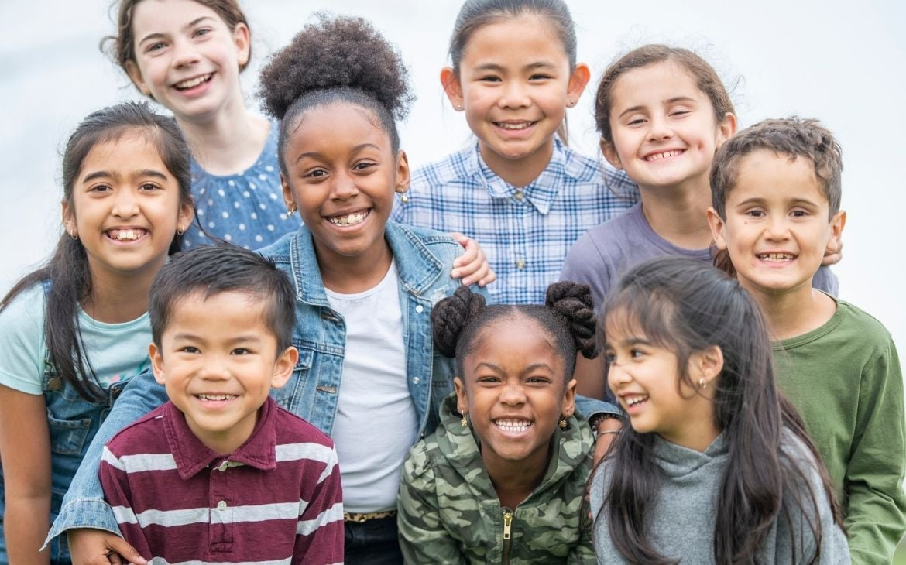
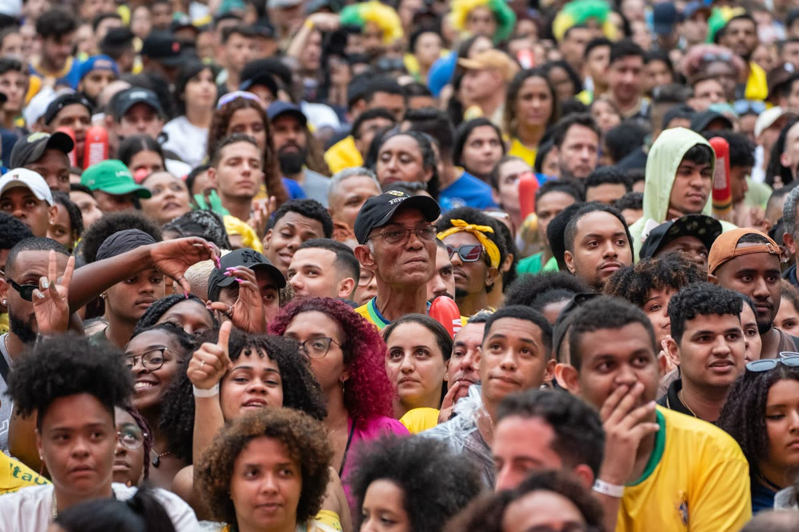
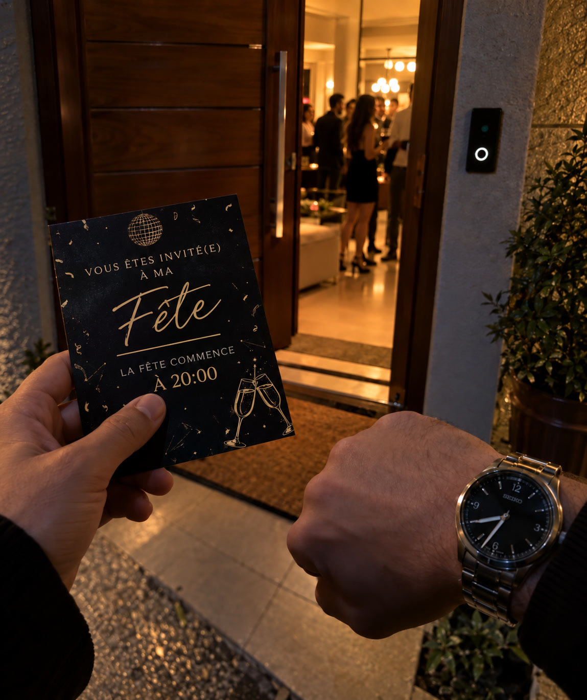

Controle remoto
Sessão: ...
Status: Inicializando...
Au quotidien
Ces petites choses qui font le Brésil.
01 · Des communautés
La plus grande communauté d’origine japonaise hors du Japon.

Des communautés qui font le Brésil
Tailles indicatives · estimations et définitions variables selon les sources.
02 · La diversité génétique
La plus grande population récemment métissée au monde.

Dans les 2 723 génomes étudiés
Nunes et al., Science (2025) · Moyennes de l’échantillon, non de toute la population.
Photo : Fábio Tito/g1
03 · L’heure des rencontres
Entre amis, l’heure d’une fête est parfois plus souple qu’un rendez-vous professionnel.

Une scène possible entre amis, pas une règle pour tous les rendez-vous.